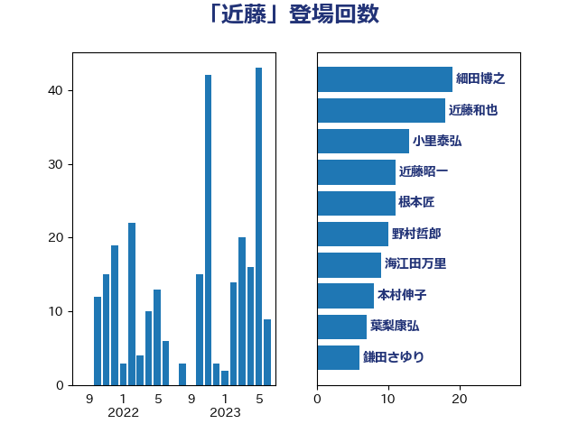

単語「近藤」

| 細田博之 | 自由民主党 | 19 回 |
| 近藤和也 | 立憲民主党 | 18 回 |
| 小里泰弘 | 自由民主党 | 13 回 |
| 近藤昭一 | 立憲民主党 | 11 回 |
| 根本匠 | 自由民主党 | 11 回 |
| 野村哲郎 | 自由民主党 | 10 回 |
| 海江田万里 | 立憲民主党 | 9 回 |
| 本村伸子 | 日本共産党 | 8 回 |
| 葉梨康弘 | 自由民主党 | 7 回 |
| 鎌田さゆり | 立憲民主党 | 6 回 |
| 笹川博義 | 自由民主党 | 6 回 |
| 浜口誠 | 国民民主党 | 6 回 |
| 新藤義孝 | 自由民主党 | 6 回 |
| 大岡敏孝 | 自由民主党 | 6 回 |
| 足立康史 | 日本維新の会 | 5 回 |
| 蓮舫 | 立憲民主党 | 5 回 |
| 岩渕友 | 日本共産党 | 5 回 |
| 山田勝彦 | 立憲民主党 | 5 回 |
| 古賀篤 | 自由民主党 | 5 回 |
| 関芳弘 | 自由民主党 | 4 回 |
| 空本誠喜 | 日本維新の会 | 4 回 |
| 木村英子 | れいわ新選組 | 4 回 |
| 堤かなめ | 立憲民主党 | 4 回 |
| 長友慎治 | 国民民主党 | 3 回 |
| 金田勝年 | 自由民主党 | 3 回 |
| 藤原崇 | 自由民主党 | 3 回 |
| 松本剛明 | 自由民主党 | 3 回 |
| 伊藤忠彦 | 自由民主党 | 3 回 |
| 高木毅 | 自由民主党 | 2 回 |
| 足立敏之 | 自由民主党 | 2 回 |
| 萩生田光一 | 自由民主党 | 2 回 |
| 石井苗子 | 日本維新の会 | 2 回 |
| 矢倉克夫 | 公明党 | 2 回 |
| 田村貴昭 | 日本共産党 | 2 回 |
| 熊田裕通 | 自由民主党 | 2 回 |
| 平林晃 | 公明党 | 2 回 |
| 太栄志 | 立憲民主党 | 2 回 |
| 大口善徳 | 公明党 | 2 回 |
| 中谷真一 | 自由民主党 | 2 回 |
| 三上えり | 立憲民主党 | 2 回 |
| 馬淵澄夫 | 立憲民主党 | 1 回 |
| 青柳仁士 | 日本維新の会 | 1 回 |
| 階猛 | 立憲民主党 | 1 回 |
| 阿部知子 | 立憲民主党 | 1 回 |
| 長島昭久 | 自由民主党 | 1 回 |
| 金子恵美 | 立憲民主党 | 1 回 |
| 金子恭之 | 自由民主党 | 1 回 |
| 野田国義 | 立憲民主党 | 1 回 |
| 辻元清美 | 立憲民主党 | 1 回 |
| 西村明宏 | 自由民主党 | 1 回 |
| 西村康稔 | 自由民主党 | 1 回 |
| 菅直人 | 立憲民主党 | 1 回 |
| 福島みずほ | 社会民主党 | 1 回 |
| 田畑裕明 | 自由民主党 | 1 回 |
| 田中健 | 国民民主党 | 1 回 |
| 玉木雄一郎 | 国民民主党 | 1 回 |
| 漆間譲司 | 日本維新の会 | 1 回 |
| 渡辺創 | 立憲民主党 | 1 回 |
| 池畑浩太朗 | 日本維新の会 | 1 回 |
| 江藤拓 | 自由民主党 | 1 回 |
| 森英介 | 自由民主党 | 1 回 |
| 梅谷守 | 立憲民主党 | 1 回 |
| 柳本顕 | 自由民主党 | 1 回 |
| 松野博一 | 自由民主党 | 1 回 |
| 末松信介 | 自由民主党 | 1 回 |
| 木原稔 | 自由民主党 | 1 回 |
| 岡本あき子 | 立憲民主党 | 1 回 |
| 山谷えり子 | 自由民主党 | 1 回 |
| 山口俊一 | 自由民主党 | 1 回 |
| 宮本徹 | 日本共産党 | 1 回 |
| 塚田一郎 | 自由民主党 | 1 回 |
| 伊藤達也 | 自由民主党 | 1 回 |
| 中川正春 | 立憲民主党 | 1 回 |